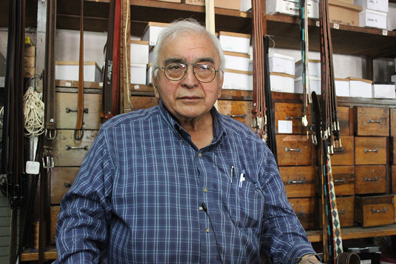

Taller de Talabartería

Profesor: Carlos Jofré Pasmiño
Este hombre ha hecho la artesanía en cuero un estilo de vida. Experto en crear todo lo que le pidas en cuero, desde billeteras hasta maletines.
No solo repara, sino que tambien es un artista en la talabartería.
Duración: 1 sesión de 3 horas
Día: 16 de Diciembre
Horario: 18 -21 horas
Edad: Mayores de 15 años
Día: 16 de Diciembre
Horario: 18 -21 horas
Edad: Mayores de 15 años
Metodología del taller:
Objetivo del taller: Capacitar a interesados para realizar un producto en cuero con técnica de talabartería tradicional. El producto a realizar será un cinturón.
Este taller durará alrededor de 2:30 horas y se impartirá en tres partes:
1) Exposición teórica: 15 min
- El trabajo en cuero, tipos y características.
- Materiales para trabajar cuero.
- Técnica para realizar objeto.
2) Enseñanza de técnica: 15 min
- El maestro explica la técnica del coser el cuero, desde como enhebrar la aguja a como empezar punto por punto.
- Práctica: 1:30 hora
- Asistida con maestro y grabada.
- Empezar a realizar el producto, recortar, hacer terminaciones y coser el cuero
3) Exposición de los productos ya terminados y convivencia : 30 min
- Que cada persona cuente su experiencia en el taller
- Coffee break
- Antes de irse que rellenen el formulario de comentarios y satisfacción